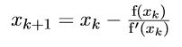
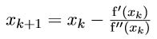

Introduction
Das Newtonverfahren (auch Newton-raphson gennant) ist ein Algorithmus zur Suche von Nullstellen. Es handelt sich dabei um ein Iterationsverfahren, welches sich pro Iteration der Nullstelle immer weiter annähert. Idealerweise wird ein Startpunkt bestimmt, der bereits möglichst nahe an der Nullstelle liegt. Die Funktion wird durch Ihre Tagente in diesem Punkt ersetzt, wobei der Schnittpunkt zwischen Tangente und x-Achse als neuer Ausgangspunkt für das Iterationsverfahren verwendet wird. Dieser Schritt wird analog solange durchgeführt, bis die gewünschte Rechengenauigkeit erreicht ist. Durch Abwandlung der Formel
welche zur Bestimmung des Nullpunkts einer Funktion verwendet wird, lässt sich auch Minimumx bzw. Maximum der selben Funktion ermitteln.
Da man hierbei eigentlich die Nullstelle der Ableitung sucht, ergibt sich für das Verfahren folgende Formel: 
Analog kann der Alogirthmus auch für mehrdimensionale Probleme angewandt werden. Die Formel hierfür lautet: